Overview
At Huispedia, I design tools that turn complex housing data into decisions people can actually make — from understanding what their home is worth to deciding how much to bid on their next one.
As Senior Product Designer, I work closely with developers, data scientists and the CTO. The data team builds the models behind things like home valuations, estimated value ranges and bidding advice; my job is to turn those outputs into experiences people can understand and act on.
Making bidding advice impossible to miss
The problem
A property page holds many competing pieces of information: photos, specifications, the energy label, pricing and neighbourhood data. Bidding advice is one of the most decision-critical of them, but the previous grey banner was vague and didn’t give it enough visual priority.
What made it hard
The challenge was information architecture: giving the advice priority on a dense page without crowding out everything else people need to see.
What I chose, and why
I strengthened its hierarchy through placement, colour and a dedicated treatment: a prominent green banner directly below the asking price, with the advice colour-coded orange for overbidding and light green for underbidding. Clicking the banner opens the Huispedia Plus modal.
The result
I A/B tested the new banner, and users found the bidding advice much easier to find.
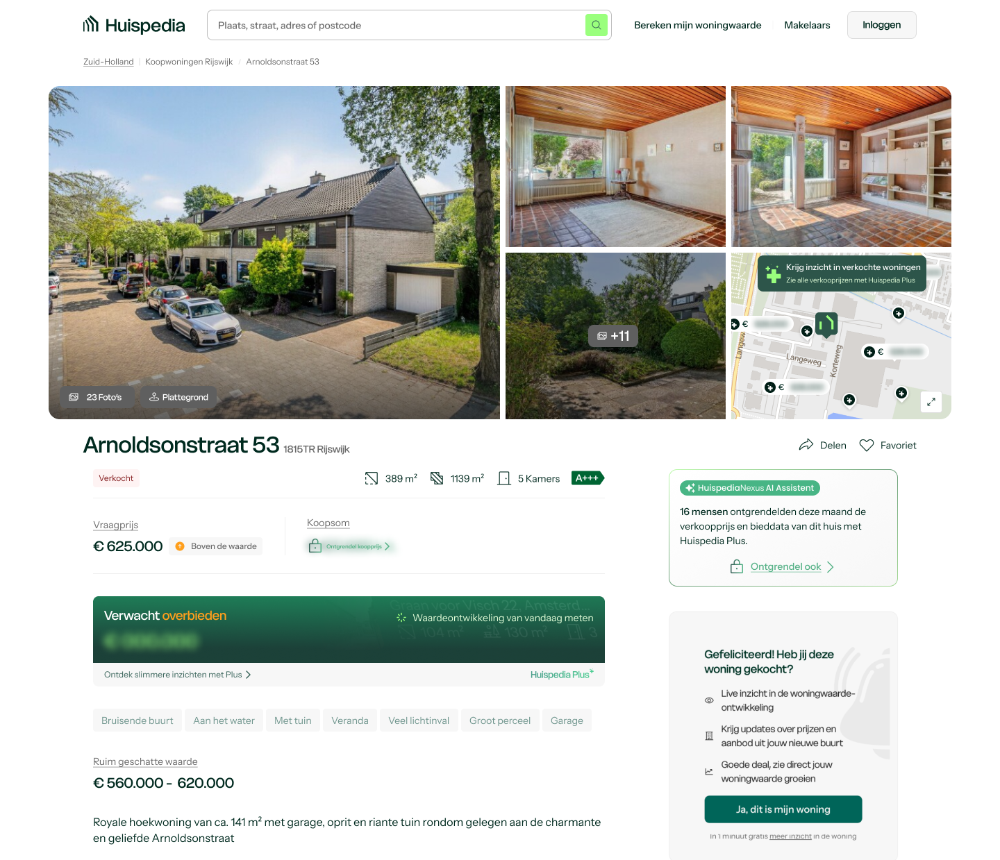
Designing value before the paywall
My Home redesign, designed together with another designer.
The problem
When homeowners view their own house, they want to know what it’s worth, how it compares to other houses in the neighbourhood, and how its value has changed compared to the market.
What made it hard
Huispedia needs to give homeowners enough free value to find My Home useful, while preserving meaningful reasons to subscribe to Huispedia Plus. Locking everything behind a paywall risked people leaving the page, and would have hurt how the pages are found through search.
What we chose, and why
Together with the CTO, we decided that homeowners can always see the value of their own home for free, while deeper insights into the surrounding market require Huispedia Plus. The locked insights are a deliberate teaser: a lock and blurred figures show what’s available.
This creates a progression from “What is my home worth?” to “What is happening around me?”. The details of your home stay visible on the left, the neighbourhood sits above the fold, and the map lets people explore further out.
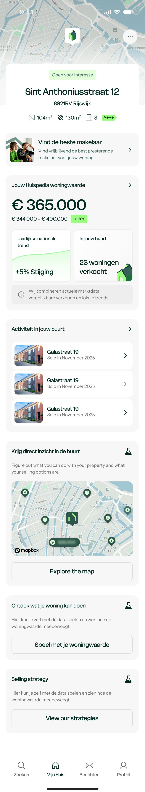
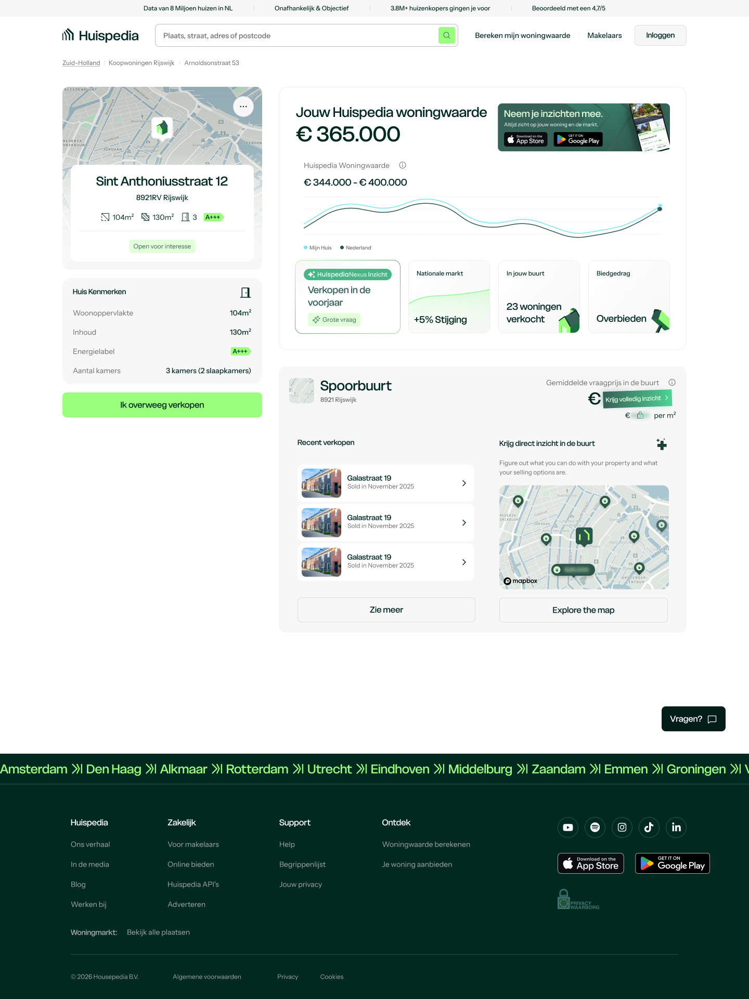
Turning a house price into a monthly reality
The problem
A purchase price doesn’t tell buyers what a home will actually cost them each month. Mortgage payments are only one part of the picture; taxes, utilities, insurance, internet and VvE contributions all affect affordability.
What made it hard
Some costs can be estimated from property data, while others depend on the buyer’s household, mortgage and personal situation. Asking users to configure everything upfront would make the feature accurate but cumbersome.
What I chose, and why
I designed the monthly-cost estimate as a useful default first, with each category independently adjustable. Users can progressively personalise the calculation without having to complete a long setup flow before seeing any value.
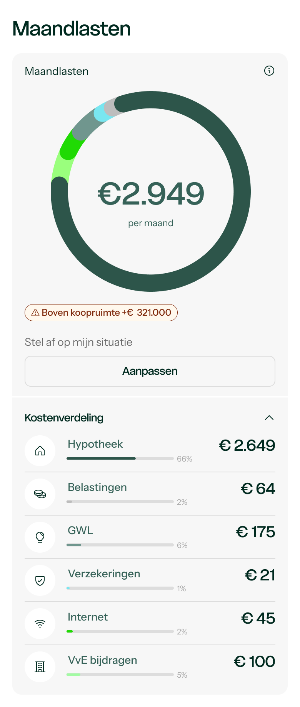
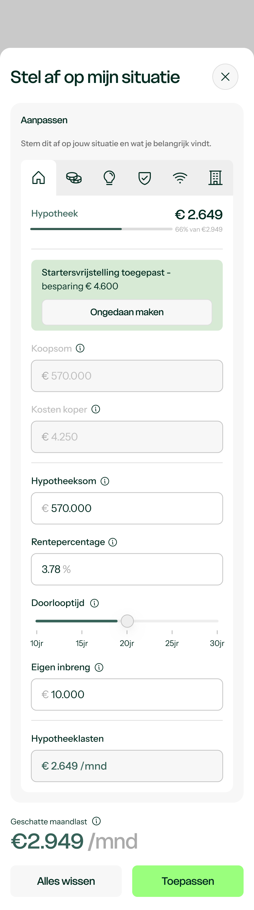
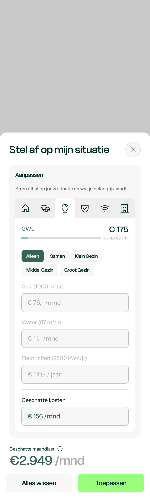
Making housing data conversational
I explored how Huispedia’s existing property and market data could become conversational. Rather than starting users with an empty chat box, I designed contextual prompts around common housing questions and kept structured routes into bidding advice and other Plus features.
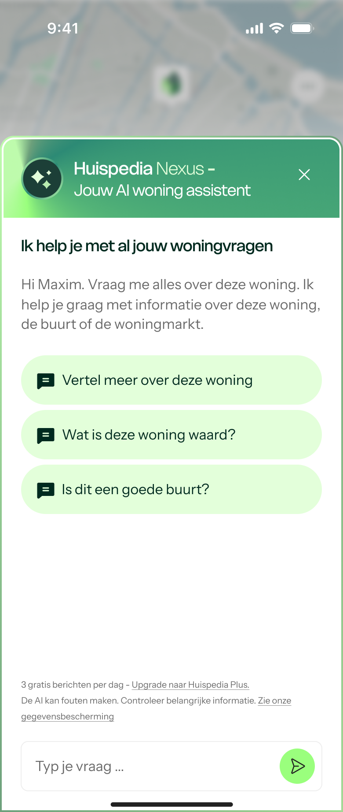
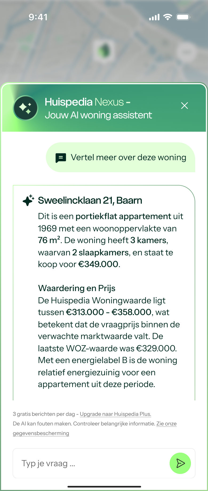
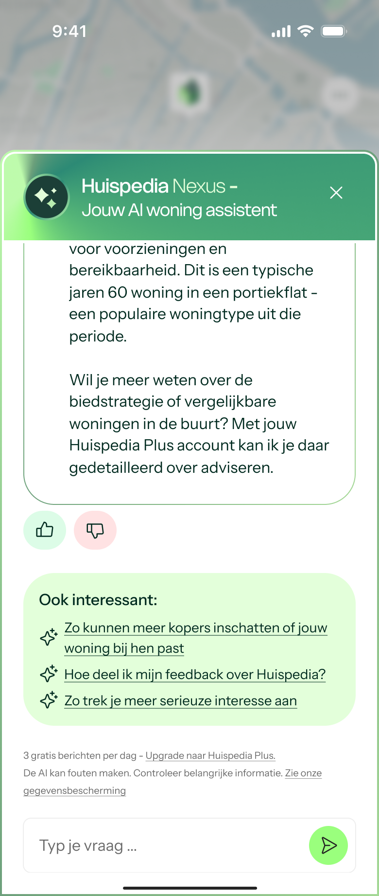
Other work at Huispedia
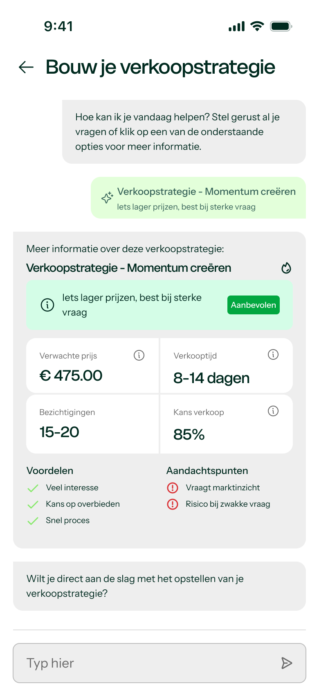
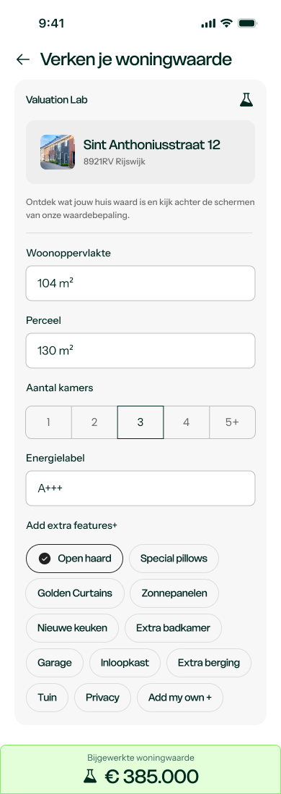
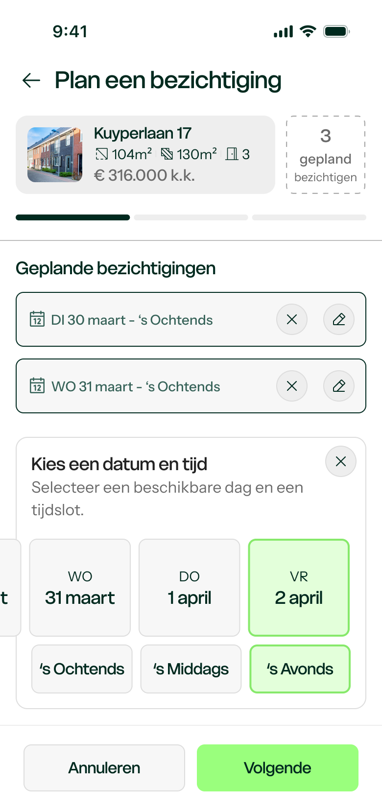